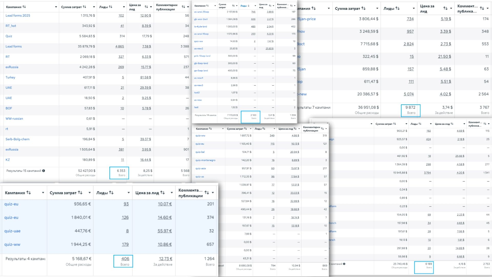

Кейс: Воскрешение продаж в нише каллиграфических подписей (США)
Как стабилизировать экономику проекта при высокой волатильности аукциона и выгорании рынка

Ситуация на старте
Продукт — индивидуальная разработка каллиграфической подписи. Услуга обладает низкой себестоимостью, но требует высоких затрат на привлечение клиента (CAC). Рынок США перегрет конкурентами, эффект новизны спал, стоимость продажи улетела вверх.
Я зашел в проект на стадии глубокого кризиса. Новый Business Manager (старый заблокирован), необученный Pixel, есть выручка, но прибыль минимальна и нестабильна.
🎯 Задачи проекта
-
1Реанимация экономики: Обучить Pixel с нуля на новом Business Manager и вывести кампании из хаоса в стабильную окупаемость (ROAS 1.4+).
-
2Защита маржинальности: Найти связки и стратегии управления ставками, которые позволят удерживать целевой CPA в условиях высокой волатильности.
-
3Масштабирование объемов: Увеличить оборот до максимально возможного уровня при строгом сохранении юнит-экономики проекта.
🚧 Узкие места
• Хрупкая юнит-экономика. Из-за высокой доли рекламных расходов рост CPA всего на 10-15% мгновенно уводил весь проект в глубокий минус.
• Экстремальная волатильность. Facebook штормило: 10 дней работы в плюс могли смениться двумя днями просадки, которые сжигали всю заработанную маржу.
• Сформированный (выжженный) спрос. Аудиторию больше нельзя было удивить просто наличием услуги. Требовался новый подход к формированию желания купить «здесь и сейчас».
🛠 Системные решения и тактика
Укрощение волатильности через Bid Caps
Чтобы защитить хрупкую экономику от штормов аукциона, мы полностью отказались от стандартных стратегий авто-ставок. Переход на жесткое ограничение предельной ставки (Bid Caps) заставил алгоритм выкупать исключительно ту аудиторию, которая вписывалась в строгий CPA, отсекая дорогой трафик в периоды перегрева.
Video-first подход
Каллиграфия — продукт эмоционального спроса. Статика перестала работать: аудиторию нельзя было удивить просто фактом услуги. Мы перевели продакшен на видеоформат, транслируя эстетику, процесс создания подписи и эмоции. Пользователь попадал на сайт уже прогретым и с готовым желанием совершить импульсивную покупку.
📊 Итоги работы
Сводные данные на основе рекламных кампаний
💡 Итоговое резюме
Главный результат проекта — не просто достижение положительного ROAS, а создание предсказуемой системы закупки трафика.
Переход на ручной контроль ставок (Bid Caps) и переосмысление креативной воронки позволили вытащить проект из мертвой точки, защитить его от алгоритмических штормов Facebook и стабильно генерировать выручку на высококонкурентном и перегретом рынке США.